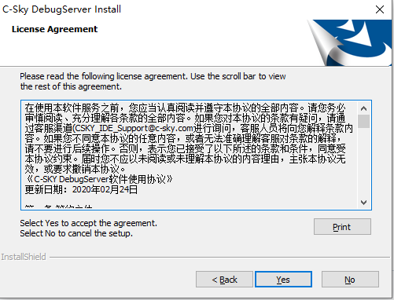
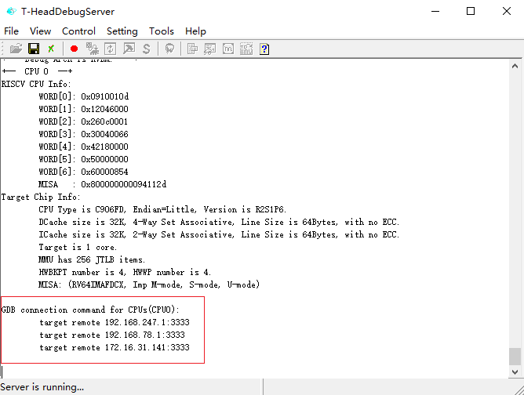

GDB 调试
15 Jan 2024
Read time: 7 minute(s)
GDB 调试工具及其功能描述如下：
| 工具 | 说明 |
|---|---|
| T-HeadDebugServer | 运行 GDB Server |
| AiBurn | 镜像烧写工具 |
| AIC-JTAG | AIC 调试器 |
| JTAG - SDMC 转接线 | 仅用于调试器连接 SDMC 接口使用 |
| Eclipse | 适配 Luban-Lite SDK 的 IDE |
| riscv64-unknown-elf-gdb.exe | 调试工具，位于 $(SDK)tool/riscv64-gdb/bin/ |
| d21x.elf | Eclipse 工程目录下生成的符号链接表 |
| Tabby | 用于控制调试串口、发送指令 |
准备工作
执行 GDB 调试前，需要按照以下步骤准备相关软件环境：
-
安装 T-HeadDebugServer（以下简称 DebugServer）
安装包自带 AIC-JTAG 驱动。
- 解压，运行 setup.exe。
- 在弹出页面中，点击 Next：
-
在用户协议界面中点击 Yes：
-
在安装路径页面，按照实际需求，修改路径：
-
在安装内容页面，建议全选，继续点 Next：

 等待完成安装后，桌面会自动创建了一个 DebugServer 的图标：
等待完成安装后，桌面会自动创建了一个 DebugServer 的图标：
-
将 AIC 调试器通过 USB-TypeC 连接 PC。
成功识别后，AIC 调试器绿灯会亮起。
SDK 配置
Luban-Lite SDK 支持两种硬件接口进行调试，分别是 JTAG 和 SDMC 口。 为避免 GPIO 冲突，需要配置
ddr_init.json 和 xxx_defconfig。
注：
配置前，确保已经加载目标工程。
根据接口的类型，选择相应的连接和配置操作流程：
- 使用 JTAG 口，配置 JTAG 接口的流程如下：
-
运行下列命令：
scons --menuconfig
-
关闭 I2C 以及 Touch Panel
Board options ---> [] Using i2c3 Drivers options ---> Peripheral ---> Touch Panel Support ---> Gt911 touch panel options ---> [] Using touch panel gt911
使用 JTAG 口，需断开 CTP 触屏排线。
-
- 使用 SD 调试 口
- 打开
target/<CPU>/<board>/pack/ddr_init.json
，配置 jtag_only 和调试口引脚：
"jtag": { "jtag_only": "1", // 1: Boot code stop in PBP after DDR init and jtag init "main": { "jtag_id": "0", //"jtag_do_pin_cfg_reg": "0x187000A0", // PA8 //"jtag_do_pin_cfg_val": "0x336", //"jtag_di_pin_cfg_reg": "0x187000A4", // PA9 //"jtag_di_pin_cfg_val": "0x336", //"jtag_ms_pin_cfg_reg": "0x187000A8", // PA10 //"jtag_ms_pin_cfg_val": "0x336", //"jtag_ck_pin_cfg_reg": "0x187000AC", // PA11 //"jtag_ck_pin_cfg_val": "0x336", "jtag_do_pin_cfg_reg": "0x1870028C", // PC3 "jtag_do_pin_cfg_val": "0x336", "jtag_di_pin_cfg_reg": "0x18700284", // PC1 "jtag_di_pin_cfg_val": "0x336", "jtag_ms_pin_cfg_reg": "0x18700280", // PC0 "jtag_ms_pin_cfg_val": "0x336", "jtag_ck_pin_cfg_reg": "0x18700294", // PC5 "jtag_ck_pin_cfg_val": "0x336", }, },
- 配置接口：
-
运行 scons --menuconfig 命令，打开配置界面。
-
关闭 SDMC1 选项。
Board options ---> [] Using SDMC1
-
- 打开
target/<CPU>/<board>/pack/ddr_init.json
，配置 jtag_only 和调试口引脚：
连接开发板
-
编译 SDK。
-
使用 AiBurn 烧录编译生成的镜像，详见配置烧录镜像。
-
开发板连接串口、AIC-JTAG 和电源线。

图 1. 开发板连接 JTAG 接口 
图 2. 开发板连接 SDMC 接口 -
使用 Tabby，打开调试串口。
- 打开选择页面。

- 选择串口 COM 口。
- 设置波特率，默认 115200。


图 3. 打开成功
- 打开选择页面。
-
将系统句柄放置在调试串口窗口，点击一下调试串口所在窗口。
-
在键盘上按住 Ctrl + C，同时给开发板上电，串口打印如下：
Pre-Boot Program ... (2023-08-08 11:29:35 13a563f) No DDR info Going to init DDR2. freq: 504MHz DDR2 initialized 120186 134875 162258 PBP done tinySPL [Built on Aug 21 2023 17:12:58] Boot device = 5(BD_SPINAND) nand read speed: 1346320 byte, 76998 us -> 17075 KB/s aic@tinySPL # aic@tinySPL #
-
运行 DebugServer，首次运行会有安全警告，点击允许访问

-
配置 。

-
配置 DebugServer 的端口号，例如 3333。

-
启动仿真器连接，显示本地 IP 及已配置的端口（3333），则表示连接成功：
-
连接成功后，即可通过 IDE 或命令行进行调试。
调试
Windows 下使用 Eclipse 调试
采用 Eclipse 配合 GDB 的调试方案，方便用户上手：
注：
使用 Eclipse 调试前，需先完成 Eclipse 工程导入及编译。
-
配置 Debug Configurations - Main

-
配置 Debug Configurations - Debugger

-
Eclipse 进入 Debug 模式

Eclipse 调试常用快捷键：
-
F5：单步进入，进入函数内部
-
F6：下一行代码，逐行执行
-
F7：返回值调用处的下一行代码
-
F8：继续运行，跳过当前中断点
-
F11：调试并启动程序
Linux 下使用 GDB 调试
注：
在 Linux 下调试前，需确保与 DebugServer 所在的 Windows 系统可以 ping 通。
-
在 SDK 根目录编写 jtag-debug.sh 脚本：
$cat jtag-debug.sh target remote 172.16.31.141:3333 #此处 IP 为 DebugServer 运行 PC 的 IP，端口为 DebugServer 配置的端口 load ./output/d13x_demo88-nor_rt-thread_helloworld/images/d13x.elf # 对应项目的 elf 文件 file ./output/d13x_demo88-nor_rt-thread_helloworld/images/d13x.elf
-
在 SDK 根目录下运行 GDB ：
./toolchain/bin/riscv64-unknown-elf-gdb -x ./jtag-debug.sh GNU gdb (Xuantie-900 elf newlib gcc Toolchain V2.6.1 B-20220906) 10.0.50.20200724-git Copyright (C) 2020 Free Software Foundation, Inc. License GPLv3+: GNU GPL version 3 or later <http://gnu.org/licenses/gpl.html> This is free software: you are free to change and redistribute it. There is NO WARRANTY, to the extent permitted by law. Type "show copying" and "show warranty" for details. This GDB was configured as "--host=x86_64-pc-linux-gnu --target=riscv64-unknown-elf". Type "show configuration" for configuration details. For bug reporting instructions, please see: <https://www.gnu.org/software/gdb/bugs/>. Find the GDB manual and other documentation resources online at: <http://www.gnu.org/software/gdb/documentation/>. For help, type "help". Type "apropos word" to search for commands related to "word". warning: No executable has been specified and target does not support determining executable automatically. Try using the "file" command. 0x0000000000106b3a in ?? () Loading section .text, size 0xa4780 lma 0x40000100 sectio--Type <RET> for more, q to quit, c to continue without paging-- --Type <RET> for more, q to quit, c to continue without paging-- section progress: 41.5%, total progress: inf% section progress: 46.2%, total progress: inf% section progress: 50.4%, total progress: inf% section progress: 53.9%, total progress: inf% section progress: 63.3%, total--Type <RET> for more, q to quit, c to continue without paging-- section progress: 93.5%, total progress: inf%--Type <RET> for more, q to quit, c to continue without paging-- section progress: 100.0%, total progress: inf% Loading section .rodata, size 0x843b8 lma 0x400a4880 section progress: 27.7%, total progress: i--Type <RET> for more, q to quit, c to continue without paging-- sect--Type <RET> for more, q to quit, c to continue without paging-- section progress: 100.0%, total progress: inf% Loading section .data, size 0x32e0 lma 0x40128c40 --Type <RET> for more, q to quit, c to continue without paging-- section progress: 100.0%, total progress: inf% Start address 0x0000000040000100, load size 1228312 Transfer rate: 107 KB/sec, 3988 bytes/write.
显示以上信息，表示已经进入 GDB 调试模式。